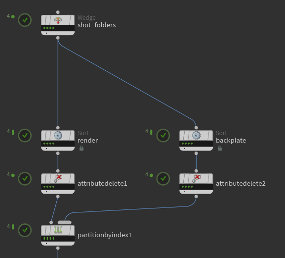
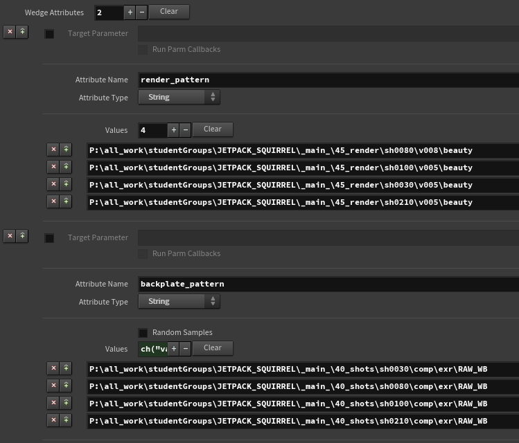
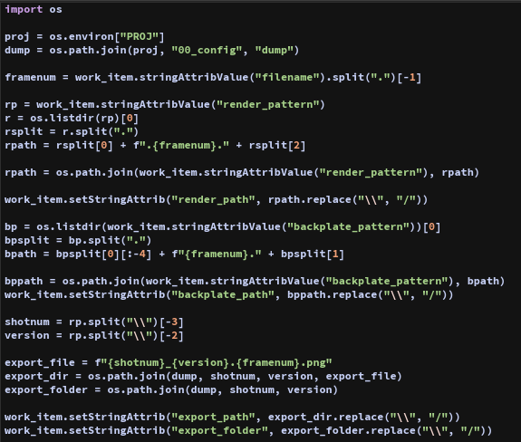
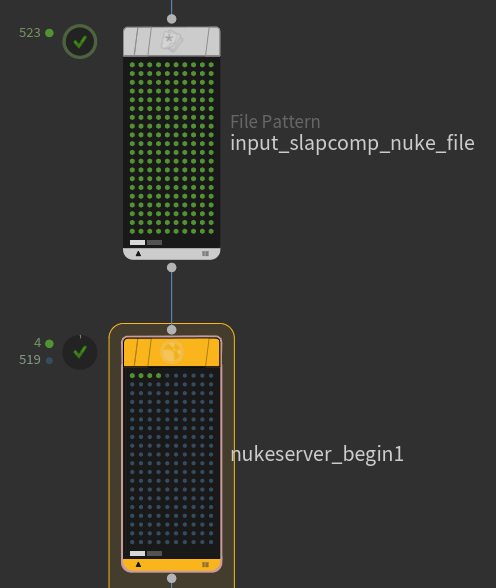
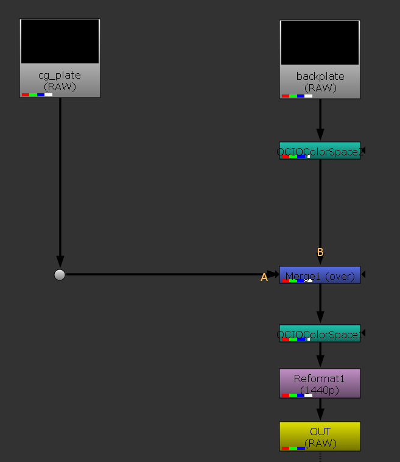
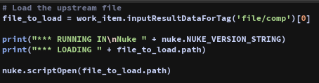
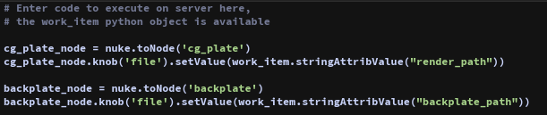
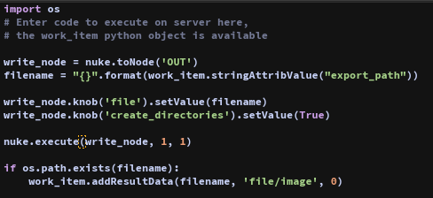
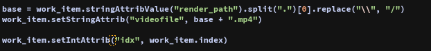

This tool was made as a proof of concept, as well as being useful to my group film for my final year of
university, and has given me a good chance to explore PDG and the power of running software headlessly.
I originally tried this inside of Houdini's Copernicus, however due to my current version of COPs having
a memory leak issue causing the computer to freeze after about 130 frames. This then lead me to Nuke
service blocks inside of Houdini, and has opened me up to a system with a lot of potential. Just some of
the use cases that I've thought of include this slapcomping tool, as basic as my setup is, but along with
this, the option to have a senior finish a comp scene, and then a cg render needs updating for dailies.
Rather than having to sort it first thing in the morning with re-exporting the nuke scene, it can be done
automatically as a post render script, it'll finish over night with no wasted time, saving artist time to
get more urgent work done.
The first thing I do is I get 2 wedge attributes, one is a list of folders that contain the cg exr files,
and the other is a list of folders containing the backplate exrs. From there, I sort them by shot order in
separate streams before merging them back together. The reason I do this is so that the backplate and cg files
are matched correctly later down the line.

As you can see I use render pattern and backplate pattern respectively, and the order selected doesn't matter
because of the sorting I am doing above.

Next is generating a bunch of path attributes. It starts with getting the proj env variable and then selecting
the dump folder. This is the folder that all my pngs get exported to. I then get the current file's render path.
I do the exact same with the backplate file. I then get shot numbers and version numbers, which I use to generate
a new path which I am going to write to.

The next step is to grab the slapcomp nuke file to open, before running through a nuke service block. This allows me
to open nuke headless (no ui) and through python I can modify the given nuke template file on a massive scale to get
the desired result.

In this case, the result I'm wanting is to convert the colorspace of the images, merging them together, reformatting
the image size and then finally exporting them as a png file.

Through python I load the incoming nuke file in my service block.

I then set the value of the file parameters for the cg and backplate read nodes to their respective file.

Then for writing out the files, I set the filename to export to. I then set create directories to be true and then
run the execute function on the write node. I tried this as a sequence rather than doing this one exr file at a time
but this seemed to be the better solution when it came to cancelling processes if they need cancelling. I then set the
output work item to be the file I just wrote.

Once that's all done, I generate a new video file path for the mp4 file per shot that I am creating, before finally sending
this to ffmpeg to be exported as a h264 mp4 file.
